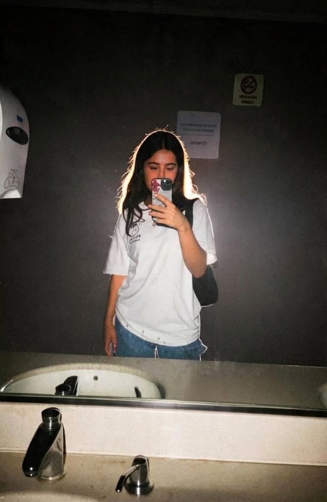

El trayecto que
quiero recorrer
“Empezar el viaje desde mi casa en Colombia hasta llegar al aeropuerto de tu ciudad y finalmente contigo.”
La distancia es algo aterrador, es un proceso largo, pero estoy dispuesto a pasar todo ese proceso, contigo, con ganas de seguir adelante y llegar hasta el punto de esta pequeña carta y mucho mas💖
Tu personalidad es algo que me hipnotizó, me mató, me encantó, tu largo cabello hermoso, tu forma de expresarte, el como conectamos es algo indescriptible, el cómo siempre dices un comentario que me hace reír, sonrojarme y hacerme sentir feliz, haces que quiera besarte a cada rato, abrazarte y estar contigo, me haces sentir el hombre más feliz de este mundo, la espera será larga, pero valdrá completamente la pena cuando por fin pueda verte.

No me gusta el picante, pero por ti me acostumbraría y me empezaría a gustar y empezaria a compartir contigo ese gusto, con el simple hecho de escuchar una notificacion tuya, escuchar tu voz, que escuches las canciones que te dedico, hablar contigo en llamada, jugar cualquier cosa contigo o que simplemente existas, me hace muy feliz, el simple hecho de hablar contigo me da tranquilidad, paz, tu eres mi persona favorita en este mundo.
No quiero simplemente quedarme en palabras contigo, quiero realmente formar algo serio contigo, con calma, planes y con la paciencia de esperarnos mutuamente, la fecha del vuelo, pues dependerá de la situación, pero pasará, nos veremos y en el futuro poder seguir estando juntos, tener una familia, existir simplemente el uno con el otro, mientras nos veamos, podamos comer el uno junto al otro, darnos comida jsjs, me encanta pensar eso y nos reiremos de las anécdotas del pasado, me encantas